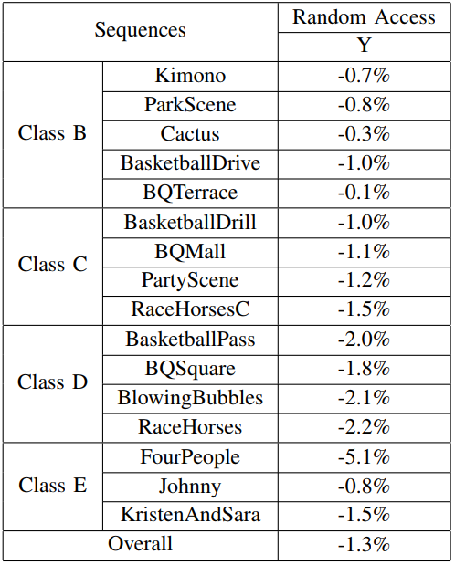

In this paper, we propose a spatial-temporal residue network (STResNet) based in-loop filter for HEVC inter coding by utilizing both spatial and temporal information. In contrast with conventional CNN-based filter for video coding, the temporal information is also taken into account for inloop filters to improve the quality of compressed frames. In particular, the residue learning approach is adopted to accelerate the training process in our designed network and boost the coding performance. To investigate the compatibility with the state-of-the-art video compression algorithm, we integrate the proposed STResNet into HM 16.15 as a novel inloop filtering method after sample adaptive offset (SAO). Moreover, the coding tree unit (CTU) level control flags are designed to guarantee the performance of STResNet by rate-distortion optimization. Experimental results indicate that STResNet provides higher visual quality and reduces on average 1.3% bit-rate for HEVC in random access configuration.
Proposed STResNet for Video Coding
The structure of proposed STResNet is shown in Fig. 1. STResNet is a fully convolution network with four layers and also the feature map numbers of each layer are provided in Fig. 1 and listed in Table I. There are two inputs for STResNet. One is the current block and the other is the co-located block of current block in the previous coded frame, which is obtained from the closest reference frame of the current one.
Fig. 1 Network structure of proposed STResNet.
Performance
Fig 2. provides the coding performance by sequence-by-sequence. In the proposed STResNet, only the luminance is processed using the trained model. Moreover, CTU level control flags are used to maximize of performance of STResNet based on rate-distortion optimization. In the RDO process, we only consider the distortion of luma channel. Four typical quantization parameters are tested: 22, 27, 32, 37, and for each QP the corresponding network is used. All experiments are conducted under random access (RA) configuration with zero QP offset for all B frames.

Fig. 2 Left: Performance of the proposed STResNet under bit-rate reduction (BDBR) metric, anchor: HM-16.15 with zero QP offset.
Publication
C. Jia, S. Wang, X. Zhang, S. Wang & S. Ma. Spatial-Temporal Residue Network Based In-Loop Filter for Video Coding. IEEE VCIP, 2017.